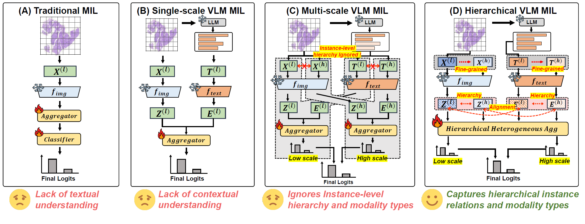
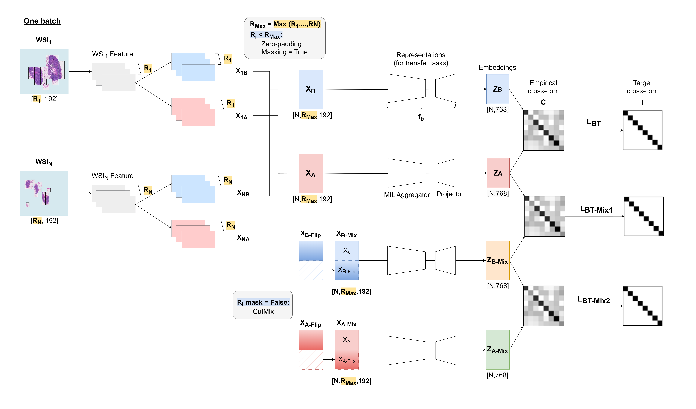

Bryan Wong
About Me
I am currently a Ph.D. candidate in Data Science at KAIST, advised by Prof. Mun Yong Yi. My current research focuses on vision-language models (VLMs) for medical image analysis, particularly in computational pathology.
During my Ph.D., I have been fortunate to collaborate with and be mentored by Dr. Huazhu Fu at A*STAR. I received my M.S. in Data Science from KAIST in 2023. Earlier, I completed my B.S. in Computer Science at NTUST in 2021, graduating one year early.
News
- [Sep. 2025] One paper on vision-language MIL (HiVE-MIL) was accepted at NeurIPS 2025.
- [Aug. 2025] One paper (LOKT) was accepted at EMNLP (Findings) 2025.
- [Aug. 2025] One paper (MF2Vec) was accepted at CIKM 2025.
- [Jul. 2025] Selected as a student volunteer at MICCAI 2025, held in Daejeon, South Korea, from Sept 23 to 27, 2025.
- [Jun. 2025] One paper (MicroMIL) was accepted at MICCAI 2025.
- [May. 2025] New preprint: "Few-Shot Learning from Gigapixel Images via Hierarchical Vision-Language Alignment and Modeling" [📑 preprint].
- [Jan. 2025] One paper (RMTS) was accepted at NAACL (Findings) 2025.
- [Jan. 2025] Two papers (Rethinking MIL FE, Time Series MIL) were accepted at IEEE ISBI 2025.
- [Jan. 2024] One paper (Predicted Loss AL) was accepted at BMC Medical Imaging 2024.
- [Aug. 2023] Started Ph.D. program at the Graduate School of Data Science (GSDS), KAIST.
- [Jun. 2023] Successfully defended my Master’s thesis.
- [Jun. 2022] One paper (Gender Pay Gap) was accepted at IC2S2 2022 and KCC 2022.
- [Aug. 2021] Started M.S. program at the Graduate School of Data Science (GSDS), KAIST.
- [Jun. 2021] Graduated one year early with a B.S. in Computer Science, NTUST.
International Conference Publications
-
 NeurIPSThe Thirty-Ninth Annual Conference on Neural Information Processing Systems (NeurIPS), 2025.(Acceptance rate: 5,290 / 21,575 = 24.52%)
-
 EMNLP
Conference on Empirical Methods in Natural Language Processing (EMNLP Findings), 2025.(Acceptance rate: 1,812 / 8,174 = 22.16% for Main; 1,420 / 8,174 = 17.35% for Findings)
EMNLP
Conference on Empirical Methods in Natural Language Processing (EMNLP Findings), 2025.(Acceptance rate: 1,812 / 8,174 = 22.16% for Main; 1,420 / 8,174 = 17.35% for Findings) -
 CIKM
34th ACM International Conference on Information and Knowledge Management (CIKM), 2025.(Acceptance rate: 443 / 1,627 = 27%)
CIKM
34th ACM International Conference on Information and Knowledge Management (CIKM), 2025.(Acceptance rate: 443 / 1,627 = 27%) -
MICCAI28th International Conference on Medical Image Computing and Computer Assisted Intervention (MICCAI), 2025.(Acceptance rate: 1,014 / 3,447 = 29%)
-
NAACLAnnual Conference of the Nations of the Americas Chapter of the Association for Computational Linguistics (NAACL Findings), 2025.
-
 ISBI
IEEE International Symposium on Biomedical Imaging (ISBI), 2025.
ISBI
IEEE International Symposium on Biomedical Imaging (ISBI), 2025. -
ISBIIEEE International Symposium on Biomedical Imaging (ISBI), 2025.
-
IC2S2 & KCC
International Journal Publications
-
 BMC
BMC Medical Imaging, 2024.
BMC
BMC Medical Imaging, 2024. -
 Preprint
-
Reviewer: MICCAI 2025, -
Student Volunteer: MICCAI 2025
Preprint
Academic Services
Powered by Jekyll and Minimal Light theme.
-
 Preprint, 2025.
Preprint, 2025.